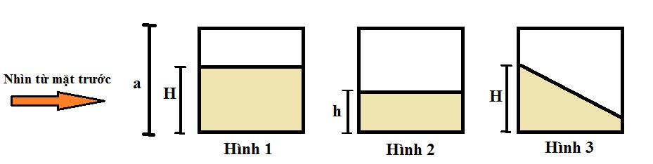

An là một đứa trẻ nghịch ngợm và rất thích uống sữa bột. Vì rất thích uống sữa, nên An thường lén mẹ lấy sữa trong các hộp để uống, hôm nay mẹ của nó quyết định mua một hộp lập phương trong suốt và để toàn bộ số sữa ở trong đó (để không cho An lén lấy sữa để uống). Khối lập phương có cạnh là a cm, khi đổ sữa vào thì số sữa bột đó cao H cm (tính từ đáy bình) và nằm cân bằng (xem hình 1 để hiểu rõ hơn).
An muốn uống thêm sữa nhưng mẹ nó nói rằng hôm nay nó đã uống quá nhiều và không cho nó uống thêm nữa. Nhưng An không từ bỏ, nó chờ mẹ đi chợ và trộm sữa để uống. An biết rằng mẹ sẽ phạt mình nếu như bà ấy phát hiện ra mình đã uống sữa mà không được sự cho phép. Tuy nhiên, nó không thể cưỡng lại sự cám dỗ này. Nó nghĩ rằng "Nếu mình lấy sữa sao cho còn lại độ cao h tính từ đáy bình (hình 2) và sau đó nó vun phần sữa còn lại trở về độ cao H ban đầu (hình 3) thì mẹ của nó không thể phát hiện ra nó đã ăn cắp sữa để uống (vì bà ấy chỉ nhìn từ mặt trước của chiếc bình)". Nhưng không may, số sữa sau khi vun chỉ có thể ổn định nếu như độ dốc của nó không vượt quá MAX độ (góc nhọn) so với đáy bình (phương nằm ngang).
Hãy giúp An tìm ra chiều cao h tốt nhất để nó có thể lấy được nhiều sữa nhất.

Dữ liệu nhập: gồm nhiều dòng
- Dòng đầu tiên chứa số nguyên dương T - số trường hợp cần kiểm tra
- T dòng tiếp theo, mỗi dòng chứa 3 số nguyên a, H và MAX.
Dữ liệu xuất: mỗi trường hợp kiểm tra xuất trên 1 dòng, là giá trị nguyên nhỏ nhất lớn hơn hoặc bằng h (vì An chỉ là một đứa trẻ, nó không giỏi trong việc đo khoảng cách là các con số thực).
Giới hạn:
- T ≤ 100000.
- 20 ≤ a ≤ 100
- 0 < h ≤ a
- 0 ≤ MAX < 90 (tính theo độ)
Nguồn: HackerEarth - Christmas Coding Marathon Contest